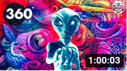
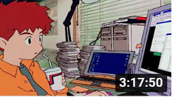
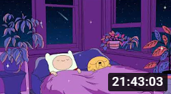
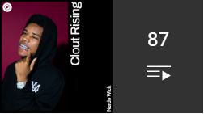

-
코딩할때 듣기 좋은 Lofi Mix 한강뷰·3-Hour Code With Me
노마드 코더 Nomad Coders
조회수 25만회 · 5개월 전
-

사이키델릭 여름 MIND CHILL 360(1 시간 짜리 음악 및 예술 비디오 믹스)
Mind Chill 360 - Chill Out NFT Music and Art
조회수 46만회 · 4년 전
-

좋은 음악은 일을 빨리 끝내는 데 도움이 됩니다. | 3 hour lofi hiphop mix / lofi study / work /
chill
beats
Lofi 코딩
조회수 19만회 · 1개월 전
-

S L E E P Y / Lofi hip hop mix - Beats to sleep/chill to | Deep Sleeping
Music
Music chill
조회수 184만회 · 4개월 전
-

Clout Rising: 주목해야 할 해외 힙합
YouTube Music
업데이트: 오늘